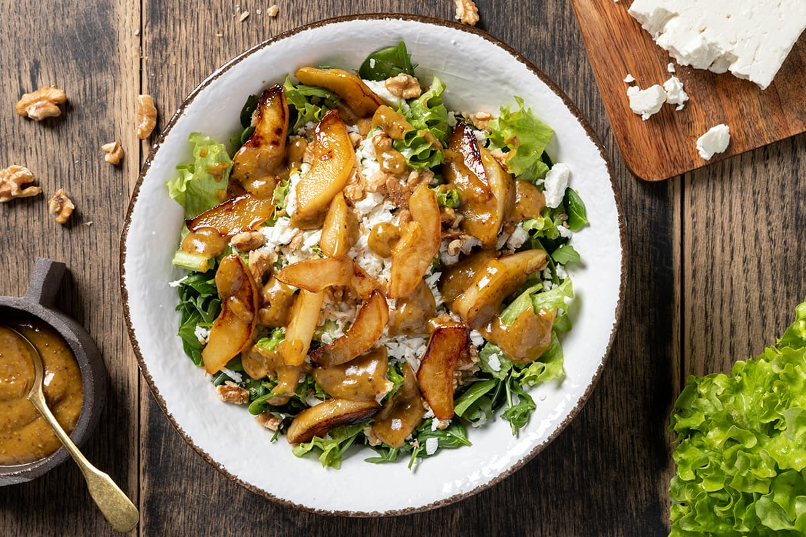

Salad with walnuts, feta and pears with honey

Description
A base of vegetables, among which the bitterness of the
rocket salad
stands out, meets a savory
feta cheese,
the sweetness of
sautéed pears
and the crunchiness of walnuts.
Over all an ancient mustard
dressing, intriguing and spicy.
Ingredients
- 3 leaves of lettuce
- 50 g of spinach
- 50 g of rocket salad
- 100 g of feta cheese
- 2 pears
- 1 tbs of mustard
- 1 tbs of honey
- 1 tbs of butter
- salt and pepper
Steps
- Wash and squeeze the salad and spinach leaves, and place them in a large, not too deep bowl.
Mix the mustard, oil, vinegar, a pinch of salt and a pinch of pepper in a bowl.
- Work the ingredients with a whisk until you get a creamy dressing.
Peel the pears and cut them into not too thin wedges.
- Melt the butter in a pan with the honey and cook the pears over high heat, until they are soft,
without flaking, and have reached a nice amber color.
Crumble the feta cheese with your hands and arrange it on the salad together with the chopped leaves.
- Add the pears and walnuts chopped and seasoned with part of the mustard sauce.
All credits go to Il Cucchiaio d'Argento